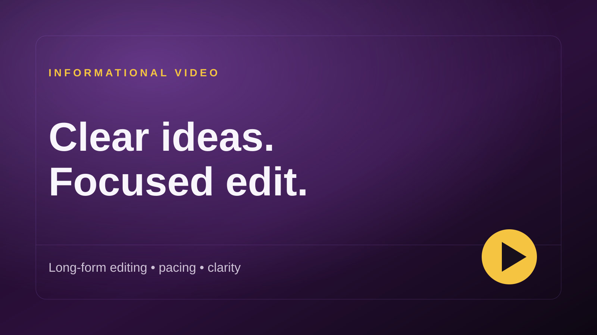

Church & Ministry
Sermon Clip Editing
Focused short-form editing built around one clear takeaway.
Taylor’s Design Media
Short-form, long-form, podcasts, interviews, and promotional edits.
Selected Work
Church & Ministry
Focused short-form editing built around one clear takeaway.

Informational
Long-form editing focused on pacing, clarity, and flow.

Promotional
A concise promo edit with a clear opening and call to action.

Podcast
Cleaner audio, tighter pacing, and simple supporting graphics.

YouTube
Long-form editing shaped around pacing and viewer attention.

Interview
Single-camera interview editing focused on pacing, clarity, and a natural conversation.
Services
Reels, Shorts, and social clips from existing footage.
YouTube, podcasts, interviews, and informational videos.
Finding strong moments in longer videos for new short-form content.
About
I’m Michael Taylor, a video editor based on the East Coast. I work with creators, churches, podcasts, and small businesses to turn raw footage into polished, engaging video content.
My approach is simple: understand the purpose of the video, remove what gets in the way, and shape the edit so the message is clear and easy to follow.
Whether I’m editing a short social clip, podcast, interview, promotional video, or long-form project, my goal is to create a final piece that feels intentional, professional, and ready to publish.
Contact
Tell me what you’re working on and what kind of edit you need.
Email Me